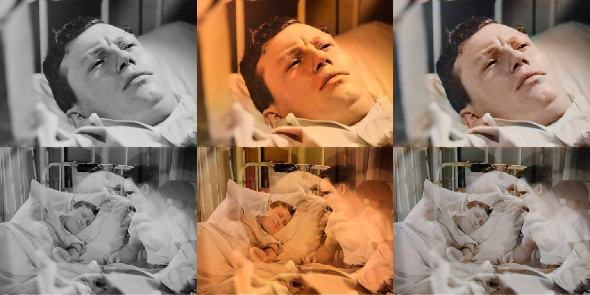
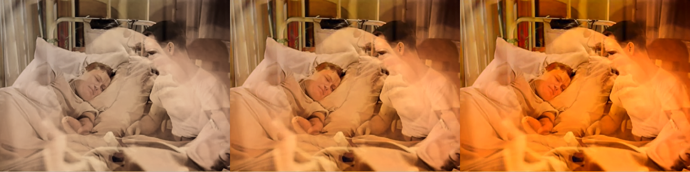
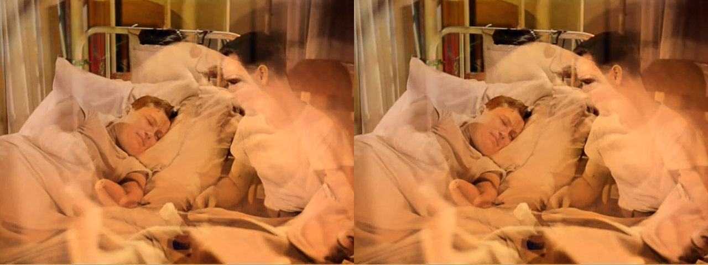
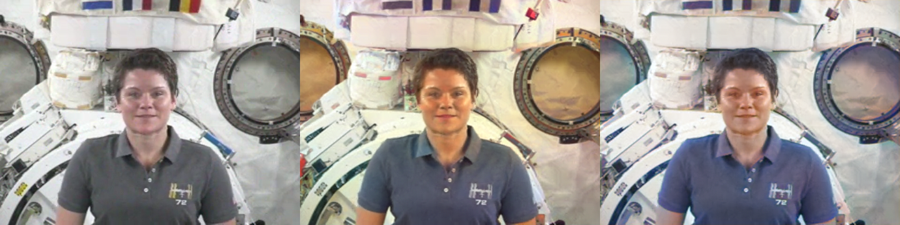

Colourisation
DDColor-T and DeOldify Video on ONNX Runtime, as a VapourSynth pass that keeps the source's luma bit-exact. 2026-11-08, macOS 27 on an M1 Pro (16 GB). Scripts: scripts/; raw results: data/. To reproduce: Scripts/models/make_colorize_ddcolor.py and make_colorize_deoldify.py (conversion venv), scripts/make_refs.sh, scripts/bench.sh, scripts/flicker.py, scripts/lab_reference.py + lab_parity.py, Scripts/models/colorize_provider_bench.py, scripts/export_unrewritten_ddcolor.py + coreml_variants.py (notes) and scripts/make_figures.sh.
ai-runtime add-on, with one add-on per model: colorize-ddcolor (DDColor-T, Apache-2.0, 220.7 MB, the default) and colorize-deoldify (DeOldify's Video generator, MIT, 872.8 MB). The source's luma is kept bit-exact (8, 10 and 16 bits); only U and V are replaced. Both conversions match PyTorch (DDColor ≤1.8e-3 CIELAB units, DeOldify ≤1.4e-6) and reproduce byte for byte; DeOldify, rebuilt without fastai, matches an independent export to 1.8e-6. Averaging each frame's colour with two neighbours either side, weighted to zero where the picture moved, cuts colour flicker by 84% for both models. On Core ML: DDColor 9.1 fps SD / 8.4 fps 1080p after a 77 s compile per process (so previews run it on the CPU), DeOldify 6.0 fps after 3 s; 7–9× the CPU.
1. Licences, read upstream
| Component | Licence (as upstream states it) | Holder named | Decision |
|---|---|---|---|
| DDColor code (piddnad/DDColor @2adb63f) | Apache-2.0 (LICENSE) | none: the LICENSE's copyright line is the unfilled template; authors per the README's citation (Kang, Yang, Ouyang, Ren, Li, Xie) | converted |
| DDColor-T weights (huggingface.co/piddnad/ddcolor_paper_tiny @cf9fd99c) | Apache-2.0 (model card's license field) | as above | colorize-ddcolor add-on, 220.7 MB |
| DeOldify code (jantic/DeOldify @5f86c28) | MIT (LICENSE) | Copyright (c) 2018 Jason Antic | network rebuilt from it |
DeOldify Video generator (ColorizeVideo_gen.pth) | MIT: the README's "Pretrained Weights" are "trained by ourselves and are released under the MIT license" | Jason Antic | colorize-deoldify add-on, 872.8 MB |
Neither is non-commercial, so neither add-on carries a usageNote. DDColor's network code adapts ConvNeXt (MIT), DETR and Mask2Former; DeOldify's builds on fastai (Apache-2.0) and torchvision's ResNet-101 (BSD-3-Clause); NOTICES says so in each entry. The DeOldify weights' host (data.deepai.org) has been unreliable in the past; the file found there (874,066,230 bytes) has the same SHA-256 (e3d98bb6…) as an independent mirror at huggingface.co/spensercai/DeOldify, so the pin is cross-checked, and since MIT permits it the converted ONNX is hosted with the other add-on files rather than fetched from upstream.
2. Conversion to ONNX
Both exports take one grey channel in [0, 1] (luma, (1, 1, H, W)) with H and W dynamic, named height/width; DDColor returns CIELAB a/b (ab), DeOldify an RGB picture in [0, 1] (rgb). TorchScript exporter, opset 17 / IR 8 (loadable by ONNX Runtime 1.23.2, the Intel-Mac floor). Re-running each script reproduces its file byte for byte (checked twice for each final file).
| File | Size | Parity, ONNX Runtime (CPU) vs PyTorch, at render sizes | Notes |
|---|---|---|---|
| colorize-ddcolor-tiny.onnx | 220.7 MB | max |Δ| 1.6e-3 / 1.3e-3 / 1.8e-3 / 9.8e-4 at 512 / 256 / 384 / 640 (CIELAB units; outputs span ±150); mean ≤7.8e-5 | loaded strict (upstream loads strict=False; nothing was missing) |
| colorize-deoldify-video.onnx | 872.8 MB | max |Δ| 1.2e-6 / 1.4e-6 / 1.0e-6 at 336 / 256 / 512 ([0, 1] RGB) | verified against FaceFusion's independent export: max 1.8e-6 |
DeOldify without fastai
DeOldify is written against fastai 1.0.60, which does not install with a current PyTorch. The generator is rebuilt module for module in plain PyTorch (DynamicUnetWide on a ResNet-101, nf_factor 2, spectral norm, self-attention in the second decoder block, SigmoidRange(-3, 3)); the checkpoint's 754 tensors load with strict=True. To catch what a key-for-key load cannot, the result is compared with FaceFusion's deoldify.onnx (models-3.0.0), a conversion of the same weights made with fastai itself, used only for this check. The first comparison failed: mean 0.016, max 0.12 on [0, 1] RGB. The cause was fastai's PixelShuffle_ICNR: it takes blur=False but always builds the blur layer and tests the module (always true) rather than the flag, so the final upsample is always blurred. With the blur, the two agree to 1.8e-6.
Rewrites for Core ML
Core ML's ML Program format has no edge-mode Pad (ReplicationPad2d, in every blur), no Expand (Tensor.repeat) and no Einsum (DDColor's colour decoder). Each splits the graph: DDColor's first export ran as six Core ML partitions, at 261 ms per frame at 512. The exports write each as an exact equivalent (pads as slices and concatenations, the repeat as a concatenation, the einsum bqc,bchw→bqhw as a matrix product over the flattened image), parity unchanged; both graphs are now one partition (DDColor 936 of 936 nodes, DeOldify 341 of 341), and DDColor runs at 101 ms per frame, 2.6× faster (data; the compile time did not change). Spectral and weight norms are baked into the weights (remove_spectral_norm, which computes the same quotient), which also removed 50 MB of duplicated weights from DDColor's file.
Fixed shapes from one file
Core ML refuses DDColor with free height and width (Failed to build the model execution plan), and Face Restoration found Core ML needs static shapes. Rather than ship a file per render size, each session fixes the named dimensions with ONNX Runtime's free-dimension overrides (ai_runtime.session(..., dims={"height": n, "width": n}), new), so one 870 MB file serves every DeOldify render factor.
3. The pass
- Input to the model: the luma plane as a grey picture in [0, 1] (range-expanded), stretched with a bilinear resize to a square, as both upstreams do (DeOldify: "a simple stretch to fit a square really makes a big difference"). DDColor at 512 (upstream's
input_size; 256–768 in steps of 32), DeOldify at render factor 21 × 16 = 336 (upstream's default for video; 10–40). - DDColor's colour: a and b are scaled to the frame (bilinear: upstream's
F.interpolatedefault is nearest-neighbour, which leaves 2-pixel colour blocks at SD and 4-pixel ones at 1080p) and recombined with each pixel's own lightness, as upstream's pipeline does with the original L. The CIELAB → sRGB conversion is a chain of sixstd.Exprstages (akarin's JIT where present) at the luma's resolution, with OpenCV's constants. - DeOldify's colour: the RGB picture is scaled to the frame (bilinear, as upstream's
_unsquare). Upstream then keeps its chroma via OpenCV's BT.601 YUV with the source's Y. The pass does the same in the source's own matrix. - Luma kept bit-exact: the colour picture becomes float YUV with the source's matrix; U and V are scaled by Colour Strength; the result is converted to the source's own format (depth, subsampling, chroma siting, dithered) and only U and V are taken (
ShufflePlanes([clip, colour, colour], [0, 1, 2])). Verified bit-exact on every frame at 8, 10 and 16 bits and on a field-based clip (lumaBitExactin results.jsonl, and the heavy test).


Checking the CIELAB chain
On 65,536 synthetic (grey value, a, b) triples (lab_reference.py → lab_parity.py, data): the Expr chain matches the same conversion in float64 with the exact sRGB curve to 0.0014 of an 8-bit level. Against OpenCV's float COLOR_LAB2RGB (what DDColor's pipeline calls) the mean difference is 0.12–0.19 levels per channel, max 3.8 — all of it OpenCV's: its float path tabulates the sRGB curve, which is coarse near black (the worst pixel: linear 0.0026, exact sRGB 0.0338, OpenCV 0.0187). The exact formula is kept.
4. Temporal stability
Both models colour each frame afresh, and nothing ties one frame's guess to the next. The pass averages each frame's prediction (at the render size, before it is scaled up) with the predictions of the r frames either side, weighted by distance (r+1−|k|) and by a motion weight: the grey pictures are compared over 8×8-pixel blocks (of the render-size picture) and a neighbour counts for nothing where its block differs from this frame's by 10 levels or more (3×3-block average, falling linearly from 1 at no difference). A neighbour past a cut is excluded the same way. Everything is a pure function of frames n−r..n+r (ai_runtime.shifted clips into std.ModifyFrame, each frame's prediction shared through a FrameMemo), so the preview, which decodes r frames either side (the pass's FrameMap radius), shows the encode's frame.
Measured on the committed fixture (120 frames: a close-up with small head movements, a dissolve, a two-shot) with flicker.py, the face report's metric adapted to colour, in 8-bit chroma levels over 8×8 blocks of the chroma planes. Still flicker is the second difference |C[t] − (C[t−1] + C[t+1])/2| where the grey picture did not move (mean luma change under 1 level either side; 50% of blocks): there any change of colour is the model's. Motion lag is how far the smoothed colour sits from the per-frame colour where the picture moved by 4 levels or more (5.6% of blocks): ghosting, or colour trailing a moving edge, raises it. Colour is the mean distance of U and V from neutral, to show smoothing does not just fade the picture. data/flicker.json.
| Variant | Still flicker | Still frame-to-frame change | Motion lag | Colour |
|---|---|---|---|---|
| DDColor, per frame (r = 0) | 1.446 | 1.828 | 0 | 31.8 |
| DDColor, r = 1 | 0.499 | 0.900 | 0.97 | 31.8 |
| DDColor, r = 2 (default) | 0.233 | 0.578 | 1.33 | 31.8 |
| DDColor, r = 3 | 0.153 | 0.439 | 1.47 | 31.9 |
| DDColor, r = 2, no motion weighting | 0.227 | 0.575 | 2.00 | 31.8 |
| DeOldify Video, per frame (r = 0) | 0.325 | 0.399 | 0 | 7.1 |
| DeOldify Video, r = 1 | 0.101 | 0.186 | 0.20 | 7.1 |
| DeOldify Video, r = 2 (default) | 0.053 | 0.123 | 0.28 | 7.1 |
| DeOldify Video, r = 3 | 0.033 | 0.092 | 0.32 | 7.1 |
| DeOldify Video, r = 2, no motion weighting | 0.049 | 0.121 | 0.48 | 7.1 |
- Smoothing works: at the default radius 2, DDColor's still-picture flicker falls 84% (1.446 → 0.233) and DeOldify's 84% (0.325 → 0.053), with no loss of colour.
- DeOldify is steadier in absolute terms, not relative ones. Per frame it flickers 4.5× less than DDColor, but it also has 4.5× less colour (7.1 vs 31.8 levels from neutral): relative to how much colour each puts down, they flicker alike. DeOldify's "Video" training buys muted colour more than steadiness.
- The motion weighting earns its place in motion, not in still areas: switching it off changes still flicker by under 0.01 but raises motion lag by half (DDColor 1.33 → 2.00, DeOldify 0.28 → 0.48) — that is colour from where an object was, painted where it is.
- Radius 2 is the default: radius 3 removes another third of what flicker is left at the cost of more lag and a slower preview (each preview frame colours 2r+1 frames).

5. Speed and providers
The whole pass (decode excluded), steady colour 2, default render sizes, on the fixture (SD, 640×480) and on the same seconds of the source at its own 1920×1080 (make_refs.sh). Setup is session creation, which on Core ML includes compiling the graph for this machine; it happens once per vspipe process. data/results.jsonl.
| Model | Provider | Setup | SD fps | 1080p fps |
|---|---|---|---|---|
| DDColor (512) | Core ML | 77–79 s | 9.1 | 8.4 |
| DDColor (512) | CPU | 0.4 s | 1.33 | 1.32 |
| DeOldify Video (336) | Core ML | 3–4 s | 6.0 | 6.0 |
| DeOldify Video (336) | CPU | 0.3 s | 0.65 | 0.64 |
- The cost is the model, at a fixed size, so 1080p runs nearly as fast as SD: the CIELAB chain and the conversions at full resolution are a few percent.
- Core ML is 7× (DDColor) and 9× (DeOldify) faster than the CPU here. DirectML (Windows) and CUDA are untested; Linux has only the CPU.
- Core ML's compile of DDColor takes 77 s in every process. For an encode that is a one-off pause before the first frame (the script says so in the worker's debug log). For a preview, which is a process of its own that colours 2r+1 = 5 frames, it would be 77 s per click, so the preview runs DDColor on the CPU instead: 5 frames in 3.8 s. DeOldify compiles in 3 s and previews on Core ML (5 frames in 1.1 s after setup). For DDColor, Core ML and the CPU agree to under 0.001 CIELAB units (table below), far inside the preview = encode test's 0.5-level tolerance. Core ML's model cache (
ModelCacheDirectory) brought a second DDColor session down to 14.5 s, but wrote 898 MB per render size, and its cache key is the model's path, which free-dimension overrides do not change; it is not used (notes). Face Restoration found the same option broke a second session outright.
The models alone, per provider and size
colorize_provider_bench.py, five runs each after a warm-up, sessions made as ai_runtime makes them (Core ML as an ML Program on all compute units, the size fixed by free-dimension overrides). data/provider_bench.jsonl.
| Model | Size | CPU ms | Core ML ms | Core ML session | Core ML vs CPU, max / mean |Δ| |
|---|---|---|---|---|---|
| DDColor | 256 | 205 | 31 | 76 s | 6.6e-4 / 3.1e-5 (CIELAB) |
| DDColor | 384 | 443 | 62 | 76 s | 3.5e-4 / 1.1e-5 |
| DDColor | 512 | 747 | 101 | 76 s | 2.9e-4 / 1.3e-5 |
| DeOldify Video | 256 | 896 | 88 | 4.3 s | 9.8e-7 / 1.5e-7 (RGB, [0, 1]) |
| DeOldify Video | 336 | 1538 | 154 | 3.6 s | 5.7e-3 / 1.3e-3 |
| DeOldify Video | 448 | 2798 | 256 | 3.7 s | 9.2e-7 / 8.0e-8 |
Core ML is 7× (DDColor) to 10–11× (DeOldify) faster than the CPU. Its output matches the CPU's to float precision except DeOldify at 336, where it differs by up to 1.5 8-bit levels (mean 0.33) — probably because Core ML places that size on different hardware (the Neural Engine computes in 16-bit floats); still far below what a viewer or the preview = encode check (0.5-level mean) would notice. The pipeline runs below these model rates (DDColor at 512 is 101 ms, the pass 9 fps) because model runs are serialised (ai_runtime.Runner) and the rest of the frame's work overlaps them. Untested here: DirectML (Windows) and CUDA; Linux has only the CPU.
6. Decisions
- Pipeline position: after Chroma Fixes, before Color Correction (Detail & Color stage). After the cleanup, because noise, blocks and dirt in the grey picture are what the model judges colour from, and colour added before a denoise or deblock would be smeared by it. After Chroma Fixes and Chroma Denoise because both work on the chroma the pass replaces (the app now says so when Chroma Denoise and Colourisation are both on). Before Color Correction, so the result can be graded — the obvious fix for a model that is too warm or too pale. Before Crop & Resize: the model sees a fixed-size square either way, and the colour is rebuilt at the source's size and then resized with the rest of the picture; it also means the pass reads the source's own colour tags, not the BT.709 conversion's.
- A source that already has colour is coloured from its luma all the same: its chroma is replaced (figure 4; the heavy test checks the luma stays bit-exact). The alternatives were worse: blocking or skipping would be a non-advisory refusal; blending the model's colour into the existing colour would produce neither. Re-colouring a faded or badly tinted colour film from its luma is also a legitimate use. The panel's description says so; nothing is blocked.
- Presets: none turns it on, including 8mm / Super 8 Film Scan. Most 8 mm home movies of the era are colour; switching on Colourisation would replace their real colour, and require a 220–870 MB download on first use. It stays a deliberate choice.
- Defaults: DDColor (smaller download, more natural colour, runs faster on Core ML once compiled), strength 1, steady colour 2 frames either side.

7. Not tested here
- Windows (DirectML), Linux (CPU only, where DDColor at 512 is about 0.8 s per frame), macOS x64 (Core ML on Intel, ONNX Runtime 1.23.2).
- Whether the colour is right: there is no ground truth for a 1945 black-and-white film, and the flicker metric only measures steadiness.
- One clip: a close-up, a dissolve and a two-shot, with little camera motion. Fast pans, where the motion weighting excludes most neighbours, are untested.